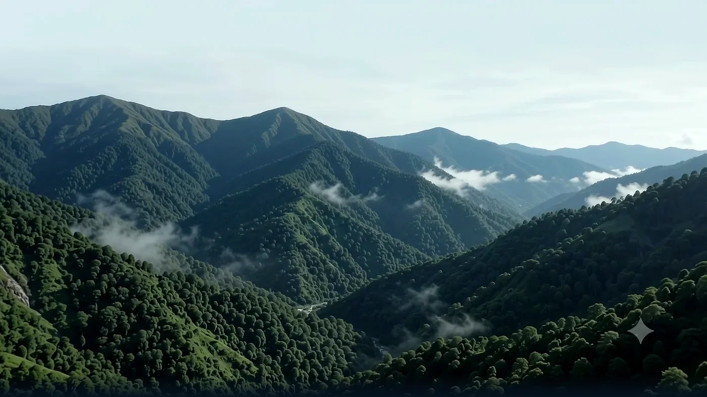
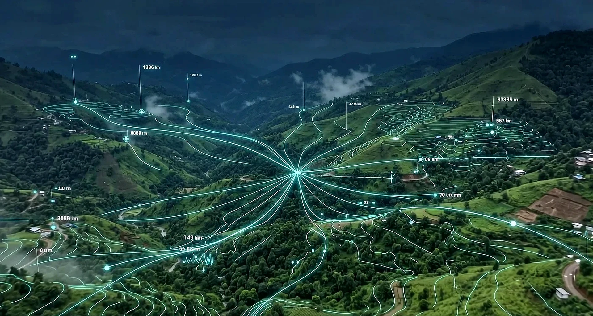

Bhoomi Rakshak
AI-powered landslide warning and environmental telemetry for India's vulnerable regions.
From satellite coordinates to local emergency action, delivering warnings before disaster strikes.
A global perspective
Narrowing to the nation
Region at higher risk
Vulnerable and fragile
Data into warning feeds
Constantly changing. Constantly shifting.
Observing terrain dynamics from the Indian subcontinent.
Vulnerable hills monitoring along the Brahmaputra basin.
Monitoring local telemetry parameters deep in the slope layer.
15 mm/hr
45%
32°
1,496 m
MONITORING
HIGH
Predictive Intelligence
Elevated rainfall combined with high soil saturation is currently the primary driver of predicted landslide risk.
Consolidating environmental feeds into a single geotechnical warning signal.
From satellite signals to local action.
Early Signals. Safer Hills.
Bhoomi Rakshak
Origin
Catastrophic landslides trigger devastation across India's North-Eastern and Himalayan regions every monsoon. Isolated villages are cut off from rescue, costing lives in the latency of reactive search-and-rescue.
Bhoomi Rakshak was built to turn this reactive window into a proactive shield: translating raw geotechnical slope moisture, angle, and vibration metrics into automated early warning signals.
Geotechnical Craft — 01
Localized sensor arrays are securely anchored deep into vulnerable clay and soil slopes. The nodes measure precipitation intensity, soil moisture %, clay depth profiles, and geophone vibrations.
Telemetry syncs securely with cloud endpoints every 3 hours, powering predictive models with zero local grid reliance.

Geotechnical Craft — 02
A Gradient Boosting Decision Tree (GBDT) model, trained on 50,000 historical slope failure logs, evaluates the 14 terrain parameters concurrently.
The system maps safety factors, alerts responders when displacement and saturation exceed geomechanical limits, and predicts landslide triggers with 94.2% model accuracy.

Technical Specifications
| Telemetry Sync Latency | Every 3 Hours (Live API) |
| Geophone Vibration Accuracy | ±0.01 mm/s |
| Model Architecture | Gradient Boosted Decision Tree (GBDT) |
| Emergency Siren Broadcast | Web Audio API Native / Solar Sirens |
| Regional Viewport Zoom | D3 GeoOrthographic Projection Map |